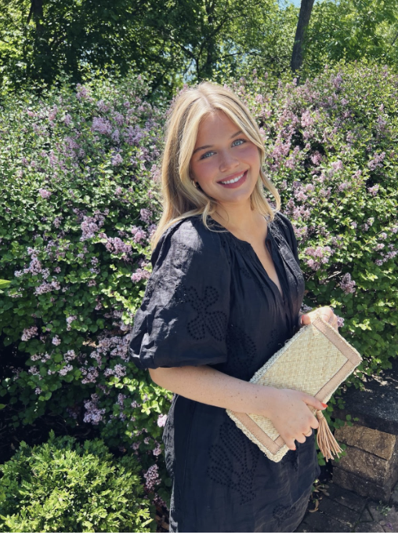
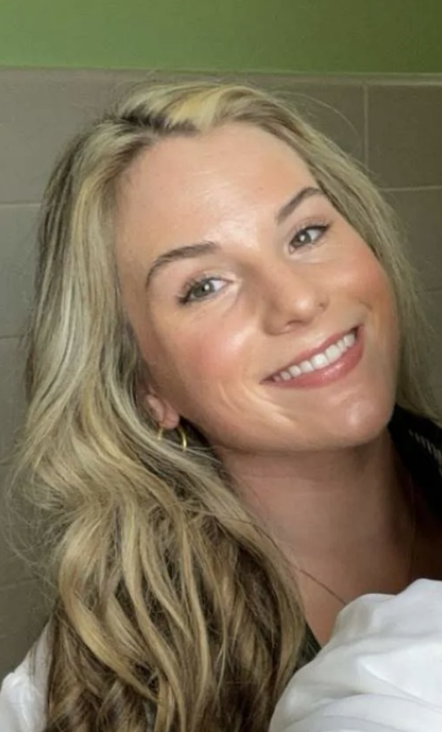
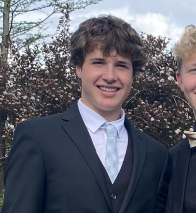
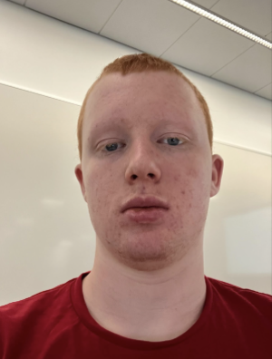

Hi, welcome to our page! My name is Finley Devins and I am a freshman ETBD student here at Miami University. I am from Cleveland, Ohio and live in a smaller suburb with my three brothers, parents, and dog Sugar. For fun I love to shop, travel, exercise, and hang with friends and family. I am also super into fashion so I am thinking of maybe adding a minor! I also plan to join a few clubs this fall here in Miami.

Lucie
Lucie Stutelberg
Freshman ETBD major
Hi! My name is Lucie Stutelberg and I am from Chicago, Illinois. I live in a small western suburb with my four older sisters, parents, and two dogs. I am a freshman this year at Miami University, and am studying Emerging Technology in Business and Design. I enjoy spending time with my family and friends, golfing, traveling, and trying new coffee shops. I am very interested in interior design and plan to minor in it.
Maria
Maria Pfahl
Freshman ETBD major
Hi, I'm Maria Pfahl and I'm from Cleveland, Ohio. I'm currently a freshman at Miami University studying Emerging Technology in Business and Design. I graduated from Rocky River highschool last spring where I was involved with golf, basketball, track, and volleyball. A little more about me is that I love to workout, hang with friends and family, spend time at the lake, and go for coffee runs.

Bebe
Bebe Mize
Freshman ETBD major
Hi my name is Bebe and I am from St. Louis, Missouri. I graduated from St. Joseph’s Academy and am now a first-year ETBD major. I have two older and one younger brother. I like spending my time traveling, being outside, and surrounded by family and friends. Traveling and experiencing new customs and cultures is my passion, and I hope my occupation post grad combined travel with ETBD!

Tyler
Tyler Albrecht
Freshman ETBD major
Hi, I'm Tyler, I'm from Cincinnati OH, and this is my first year as a ETBD student. I graduated from Lakota East High School and I plan on playing lacrosse in the spring. I love going to concerts, Hanging out with friends, and Traveling. I plan on making online shops for companies or doing real estate when I graduate. I am looking forward to meeting new people in Miami.

Adam
Adam Drake
Freshman Gaming Major
I am 18 years old. I was born in Grenoble, France, then moved to Illinois, USA. Then I moved around a couple times within Illinois, and after that, I moved to New Zealand for about 4 years. Lastly, I moved to Ohio about 4 years ago too. I love esports; specifically, I love League of Legends.